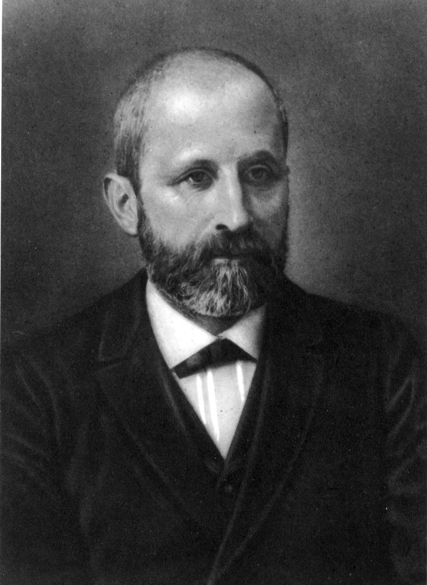
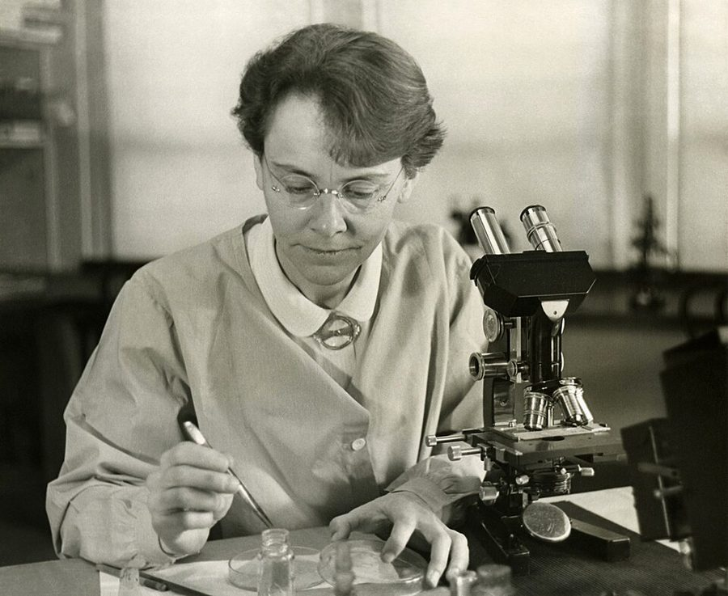
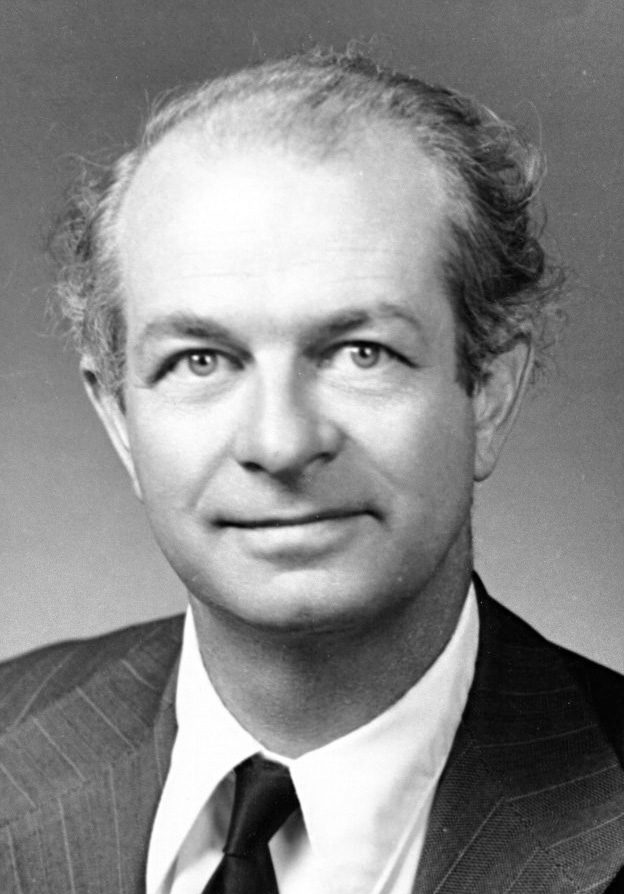
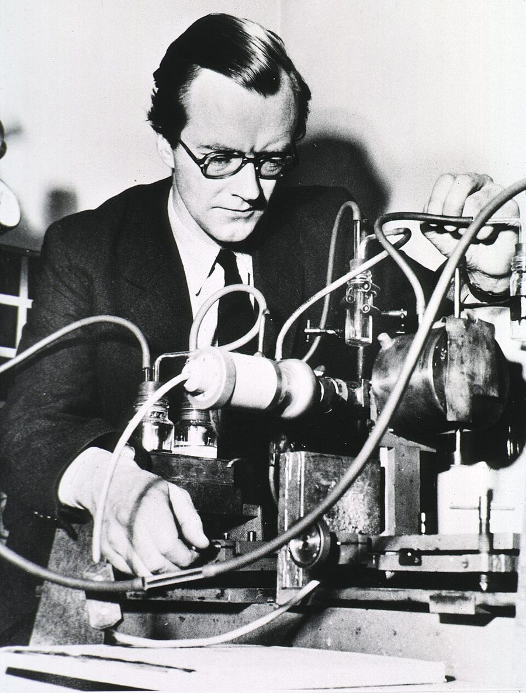
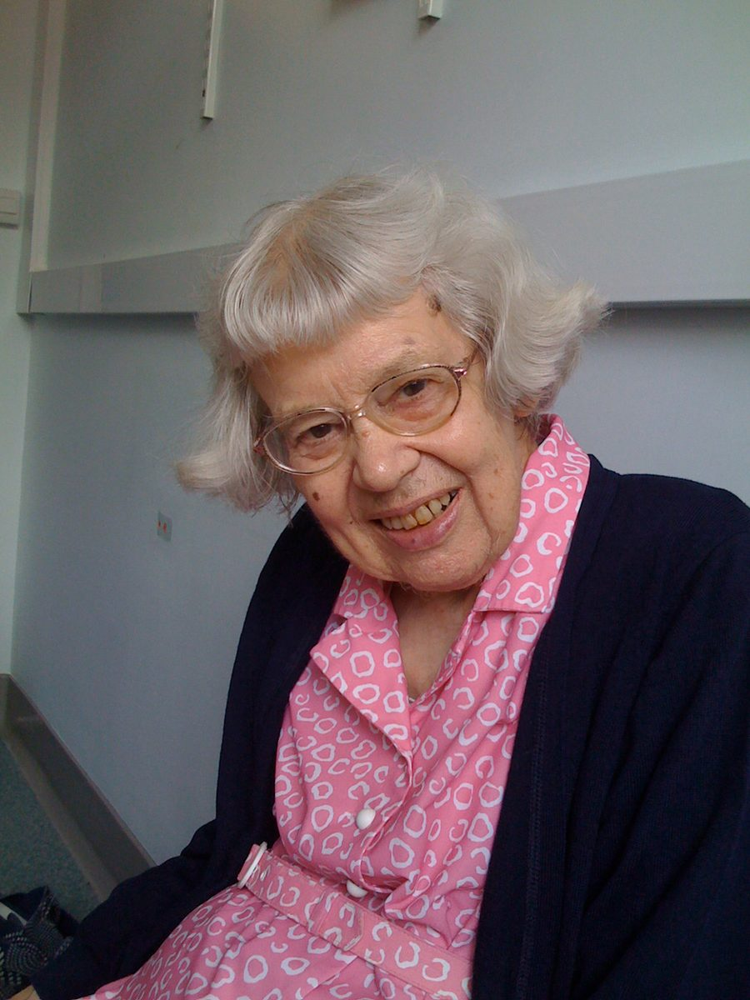
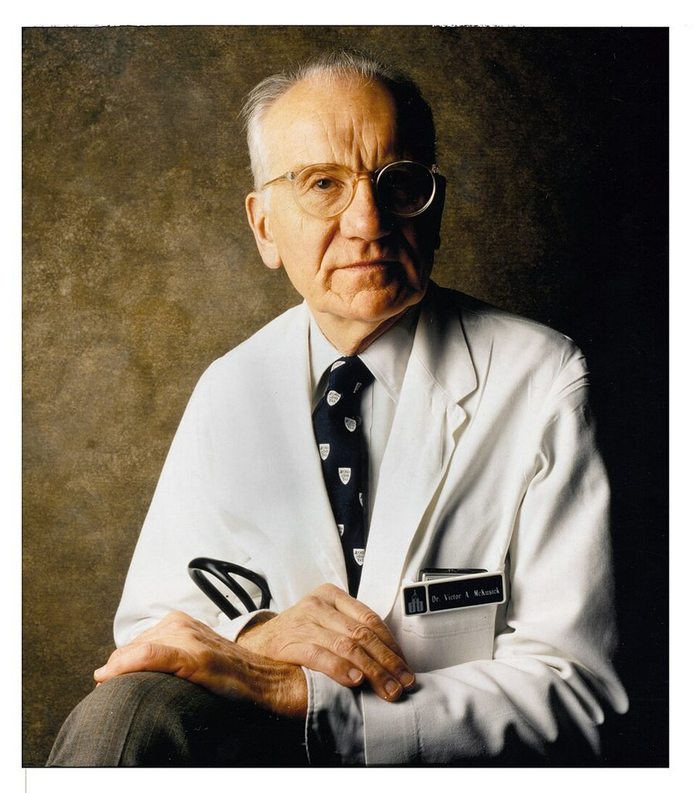
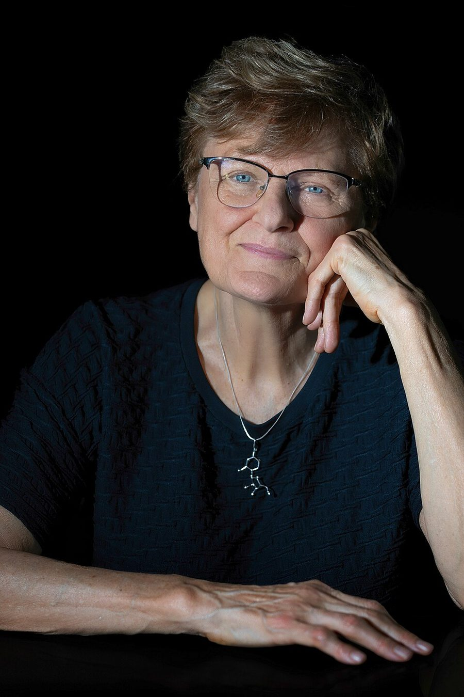
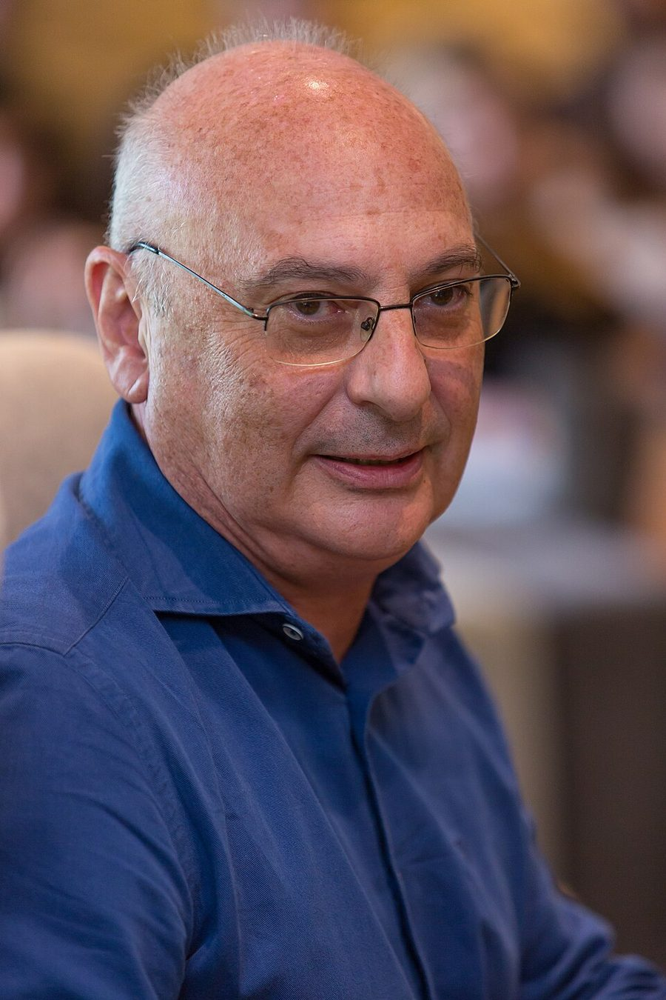
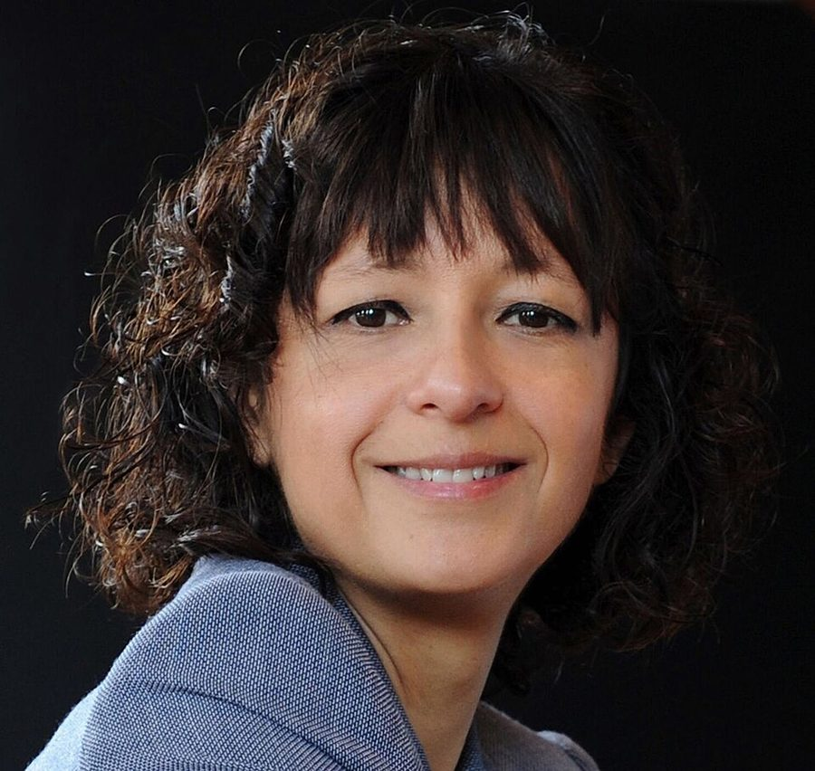
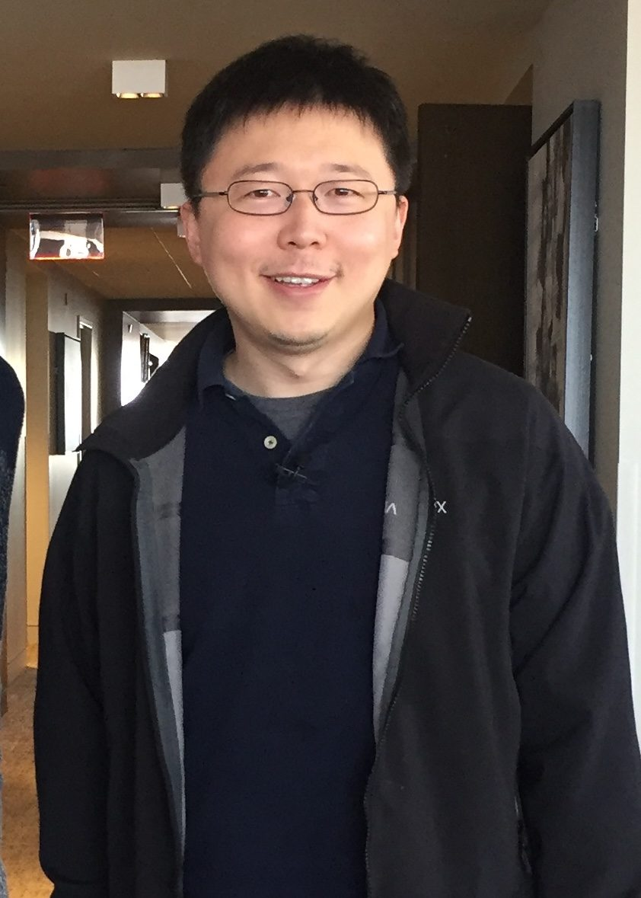

The people behind genetics
Physicians, geneticists, biochemists and biologists who moved genetics forward, from Mendel to CRISPR.
 011822–1884
011822–1884Gregor Mendel
The Augustinian friar who, crossing peas in a monastery garden in Brno, discovered the rules by which traits are inherited. Nobody understood him in his lifetime.
Read →
021844–1895Friedrich Miescher
The young Swiss physician who in 1869 isolated DNA for the first time, from the pus on surgical bandages. He called it "nuclein".
Read → 031848–1935
031848–1935Hugo de Vries
The Dutch botanist who rediscovered Mendel's laws in 1900 and brought the word "mutation" into biology.
Read → 041857–1936
041857–1936Archibald Garrod
The London physician who saw in the black urine of alkaptonuria the first Mendelian disease in humans, and coined the phrase "inborn errors of metabolism".
Read → 051866–1945
051866–1945Thomas Hunt Morgan
He distrusted Mendel until a white-eyed fly changed his mind. His "fly room" proved that genes sit on chromosomes.
Read →
061902–1992Barbara McClintock
Looking at maize chromosomes under the microscope, she discovered that some genes "jump". It took thirty years for others to believe her; then she won an unshared Nobel Prize.
Read → 071877–1955
071877–1955Oswald Avery
He set out to improve the treatment of pneumonia and ended up proving, in 1944, that genes are made of DNA. He never received the Nobel Prize.
Read →
081901–1994Linus Pauling
The chemist who showed in 1949 that sickle cell anaemia is caused by an abnormal haemoglobin. He invented the concept of "molecular disease".
Read →091905–2002Erwin Chargaff
He patiently measured the four bases of DNA in many species and found two rules that became the key clue to the double helix.
Read → 101920–1958
101920–1958Rosalind Franklin
X-ray crystallographer whose images and measurements of DNA, including Photo 51, were decisive in discovering the double helix. She died aged 37.
Read →
111916–2004Maurice Wilkins
The New Zealand-born physicist who obtained the first X-ray images of DNA and shared the 1962 Nobel Prize. The "third man" of the double helix.
Read → 121928–2025
121928–2025James Watson
Co-discoverer of the double helix in 1953, first director of the Human Genome Project and a controversial figure because of his racist statements.
Read → 131916–2004
131916–2004Francis Crick
The physicist turned biologist who, besides the double helix, formulated the "central dogma" and helped work out how the genetic code is read.
Read → 141905–1993
141905–1993Severo Ochoa
The Asturian biochemist who first synthesised RNA in the laboratory. His enzyme made the artificial messages with which the genetic code was cracked.
Read →151925–2022Marthe Gautier
The French physician who in 1958 counted 47 chromosomes in children with Down syndrome. For half a century the credit went to someone else.
Read →161926–1994Jérôme Lejeune
The French paediatrician who signed the 1959 discovery of trisomy 21, the cause of Down syndrome. A finding in which Marthe Gautier played a key part.
Read →
171925–2014Mary Lyon
The British geneticist who discovered that in females one of the two X chromosomes is switched off at random in each cell. "Lyonisation" explains tortoiseshell cats and many diseases.
Read → 181927–2010
181927–2010Marshall Nirenberg
A young, almost unknown NIH researcher who in 1961 read the first "word" of the genetic code using a test tube and an RNA made only of uracil.
Read → 191922–2011
191922–2011Har Gobind Khorana
The Indian chemist who made RNA fragments with known sequences in the laboratory to crack the genetic code, and who synthesised the first artificial gene.
Read →201916–1995Robert Guthrie
The microbiologist and paediatrician who invented the heel-prick test. Thanks to his drop of blood on paper, millions of babies with phenylketonuria have grown up healthy.
Read →
211921–2008Victor McKusick
The Baltimore internist regarded as the father of medical genetics. He created the catalogue of inherited diseases that every geneticist in the world still consults: OMIM.
Read → 221926–2023
221926–2023Paul Berg
In 1972 he joined DNA from two different organisms and opened the era of genetic engineering. Then he called for a pause to think about the risks.
Read → 231918–2013
231918–2013Frederick Sanger
The only scientist with two Nobel Prizes in Chemistry for decades. He taught us to read proteins and then DNA; his sequencing method deciphered the first human genome.
Read → 241938–2019
241938–2019Margarita Salas
A student of Severo Ochoa and a pioneer of molecular biology in Spain. Her DNA polymerase from the phi29 virus is used in laboratories all over the world.
Read → 251944–2019
251944–2019Kary Mullis
One night in 1983, driving through California, he imagined how to copy a piece of DNA billions of times. That was the birth of PCR.
Read → 261950–
261950–Alec Jeffreys
The Leicester geneticist who in 1984 saw, by chance, that DNA can identify a person. He invented genetic fingerprinting.
Read →271955–Ángel Carracedo
The Galician physician who made Santiago de Compostela a world reference in forensic genetics and population genomics. He has helped identify disaster victims and missing people.
Read → 281945–
281945–Nancy Wexler
Her mother died of Huntington's disease. She organised the hunt for the gene, which ran through the villages of Lake Maracaibo in Venezuela.
Read → 291950–
291950–Lap-Chee Tsui
The geneticist who in 1989, in Toronto, found the cystic fibrosis gene, one of the first disease genes found without knowing which protein to look for.
Read → 301946–
301946–Mary-Claire King
In 1990 she showed that a gene predisposing to hereditary breast cancer exists: BRCA1. She also used DNA to give stolen children in Argentina back their identity.
Read → 311950–
311950–Francis Collins
Physician-geneticist who co-discovered the genes for cystic fibrosis and neurofibromatosis and led the Human Genome Project to completion in 2003.
Read → 321946–2026
321946–2026Craig Venter
The scientist-entrepreneur who challenged the public human genome project with a faster technique and created the first cell with a synthetic genome.
Read →
331955–Katalin Karikó
The Hungarian biochemist who spent decades, with almost no funding, turning messenger RNA into a medicine. Her discovery with Drew Weissman made the COVID-19 RNA vaccines possible.
Read →
341963–Francisco Mojica
Studying microbes from the salt marshes of Santa Pola, this Alicante microbiologist discovered CRISPR sequences, named them and was the first to suggest they were an immune system.
Read →
351968–Emmanuelle Charpentier
French microbiologist who discovered a key piece of the bacterial CRISPR system and, with Jennifer Doudna, turned it into scissors for editing genes.
Read → 361964–
361964–Jennifer Doudna
Berkeley biochemist and expert in the shape of RNA molecules. With Emmanuelle Charpentier she turned CRISPR-Cas9 into a tool for editing genes.
Read →
371981–Feng Zhang
The bioengineer who adapted CRISPR to edit genes in human cells in 2013, and later developed tools to edit RNA and detect viruses.
Read →381955–Svante Pääbo
The founder of palaeogenomics. He sequenced the Neanderthal genome, discovered the Denisovans and showed that we carry their DNA.
Read →